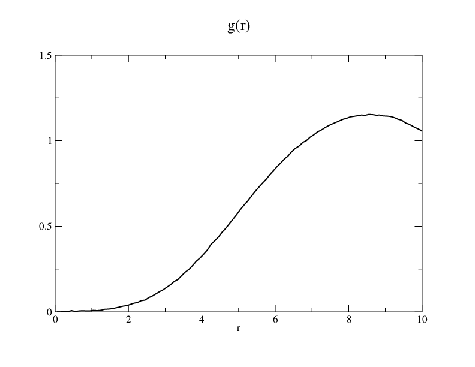

I learned about dissipative particle dynamics (DPD) with Max, Upendra, and Ardeshir. It is an amazing tool for simulation of mesoscale systems including polymers and bio-membranes. The system size can be extened to µm ,and µs for time scale which is about 10^6 faster than regular molecular dynamics.
This post is for my learning process and materials of DPD.
Rob Groot seems to be the bigest name in the field of DPD. And he has really good slides for DPD. Here is the link.
In the presentation, he answered the question of how to parameterise DPD. The goal of it is to reproduce local thermodynamics which are measured by compressibility and solubility. Flory-Huggins theory are used for the solubility.
I tried to run dpd in lammps. With the input below.
# This is LAMMPS input script specifies a simple DPD simulation.
# It reproduces Fig. 2 of Groot and Warren, J. Chem. Phys. 107,
# 4423 (1997)
units lj
atom_style atomic
comm_modify vel yes
pair_style dpd 1.0 1.0 34387
# create simulation box
lattice fcc 3
region mybox block -4 4 -4 4 -4 4 units lattice
create_box 1 mybox
create_atoms 1 box
# define masses and interaction coefficient
mass * 1
pair_coeff 1 1 25 4.5
# create initial velocities
velocity all create 1.0 4928459 dist gaussian
# change neighbor list parameters to avoid dangerous builds
neighbor 2.0 bin
neigh_modify delay 3
# specify simulation parameters
timestep 0.04
thermo 10
# first equilibrate the initial condition
fix 1 all nve
run 500
dump traj all xtc 50 traj.xtc
dump_modify traj unwrap yes
dump traj_xyz all xyz 50 traj.xyz
# production run
run 50000
The gr plot I got from this simulation is the same as the plot 2 in the paper.
